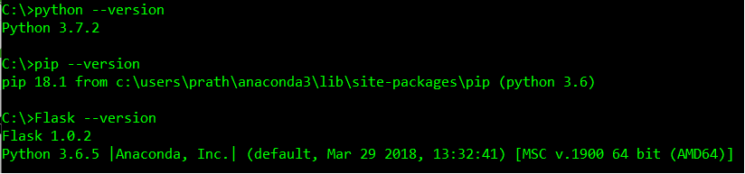
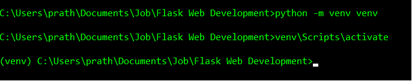

Flask is python based BSD Microservice development framework.
Visit the Flask's place right away!
Flask is python based BSD Microservice development framework.
Visit the Flask's place right away!
Installing Flask


It's important to maintain constant version of dependancies or language that we are using. somtimes IDE used maintains their own evironment for projects
these dependacies must be same for projects individually, maven is one of the open source package or dependaciy management and build tool.